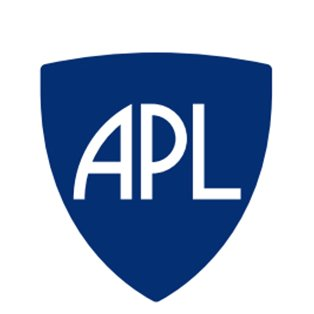
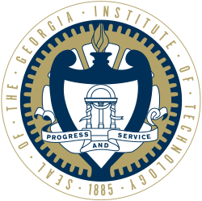

Looking for the Toxic Classification project? It's here!
About Me
My Work Experience
Itential, LLC (August 2019-August 2021)
I was fortunate enough to do three rotations as a co-op for Itential, where I got a lot of exposure to the software engineering industry. During my time there, I helped update features, create new features for their product, and learn some of the processes & norms commonly used in software development.
Skills Learned:
- MongoDB/Non-relational database programming
- HTML
- CSS
- JavaScript/Node.js
- Agile/SCRUM via JIRA systems
 Georgia Tech Research Institute-ELSYS (May-August 2019)
Georgia Tech Research Institute-ELSYS (May-August 2019)
During this internship in GTRI's Electronic Systems Laboratory division, I helped my mentors create a target detection system, potentially for use in future defense systems.
Skills Learned:
- Python/NumPy
- Machine Learning
- Computer Vision
- Git
 Johns Hopkins APL, Air & Missile Defense Sector (August 2016-May 2017)
I did this internship in conjunction with the rest of my schoolwork, which helped me learn how to balance my work, school, and the rest of my life. Our main goal was to make a so-called "hydrocommunications" device--basically, to see if we could create a way of communication via water waves and buoys. That was one of my first significant experiences with failure: we did not achieve our goal, but we were able to look back in the process and reflect on what went right and what went wrong during our development.
Skills Learned:
- MATLAB
- Image Analysis
- Team Communication
Education
 M.S. CS, Georgia Institute of Technology (August 2021-present)
The second part of my BSMS program at Georgia Tech, I anticipate graduating in May 2022 with my MS. I will be specializing in Machine Learning.
Relevant coursework:
- CS 7641 (Machine Learning)
- CS 7649 (Robot Intelligence/Planning)
- [In Progress] CS 6220 (Big Data Systems & Analytics)
- [In Progress] CSE 6242 (Data & Visual Analytics)
- [In Progress] CS 6515 (Graduate Algorithms)
B.S. CS, Georgia Institute of Technology (August 2017-May 2021)
Thanks to Georgia Tech, I had an excellent experience as an undergraduate CS major, and I was able to expand my horizons with regards to computer science and learn more about both research and industry. My concentrations were in People and Intelligence--for more information on GT's unique Threads program, click here. I was even able to get a head start on my Master's Degree, thanks to their BS/MS program. Probably my most significant experience here has been helping out with CS 4400 as a TA since my sophomore year. I have now seen what college classes are like as both a student and an instructor, which has helped me appreciate my education even more.
Relevant coursework:
- [GPA: 3.91]
- CS 3600 (Introduction to Artificial Intelligence)
- CS 4400 (Introduction to Databases)
- CS 4460 (Introduction to Data Visualization)
- CS 4476 (Introduction to Computer Vision)
- CS 4510 (Automata & Complexity)
Severna Park High School (August 2013-May 2017)
I was fortunate enough to go to a very good high school, and as such I took advantage of that opportunity by taking too many AP courses! The best part about their curriculum was their offering of Project Lead the Way courses, a national initiative that helps high school students learn about engineering early in their academic careers. PLTW helped shape me into who I am today: without them, I would not be as successful as I am. In fact, I made my first attempt at a website for their capstone class, which you can find here!